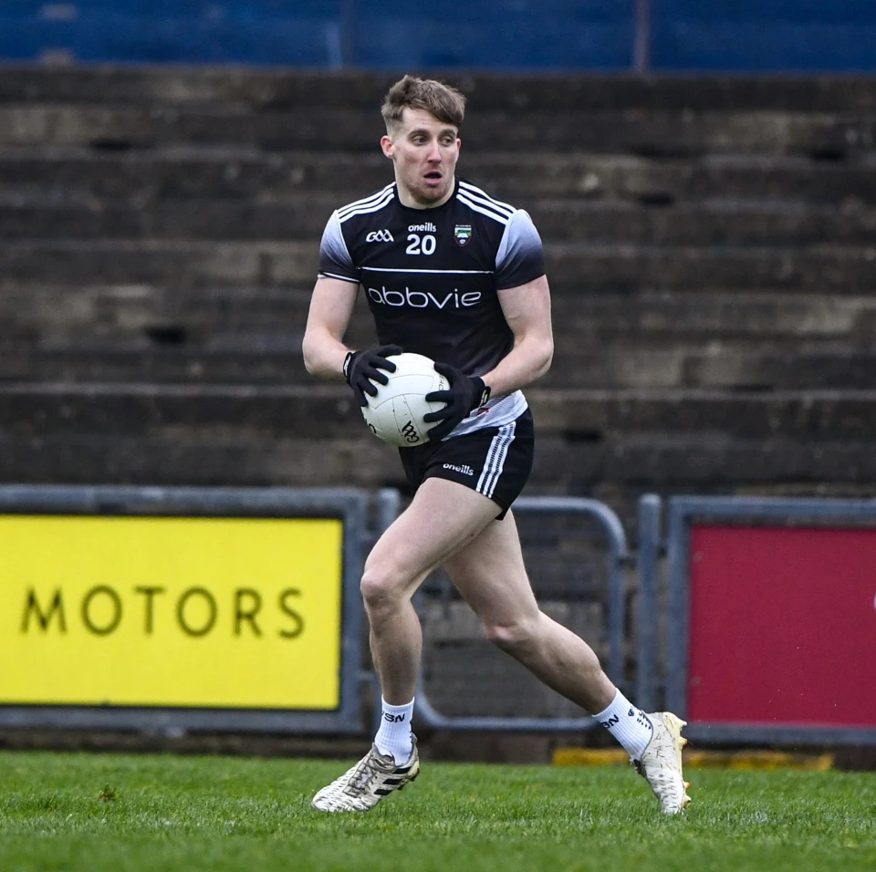
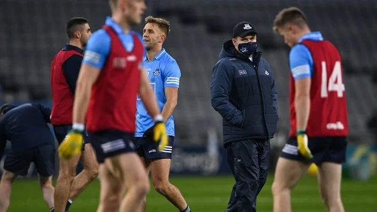
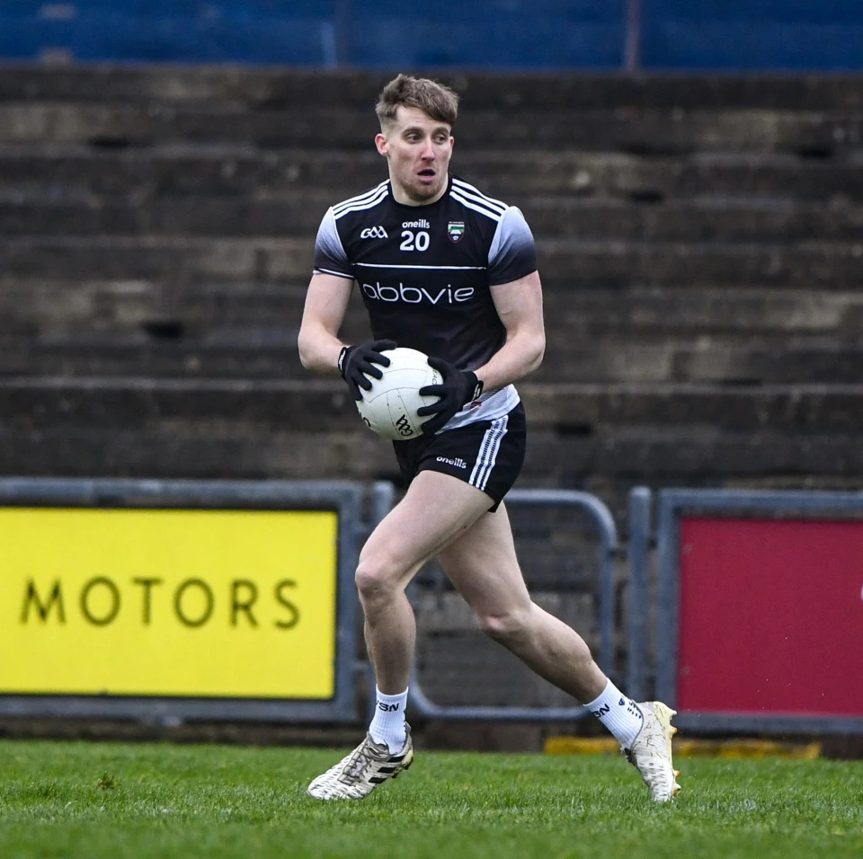

Sligo GAA complete transfer of Pat Spillane Jr.Read More

Dublin on the down after their 5 year domanance of the GAA Championship .Read More
Sligo GAA complete transfer of Pat Spillane Jr.Read More
Sligo win first ever Connacht u20 Football ChampionshipRead More